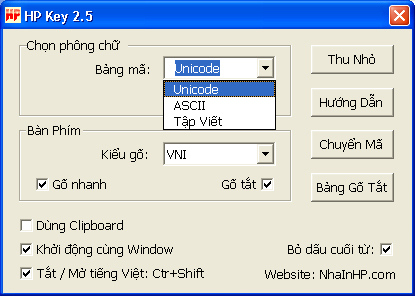
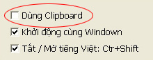
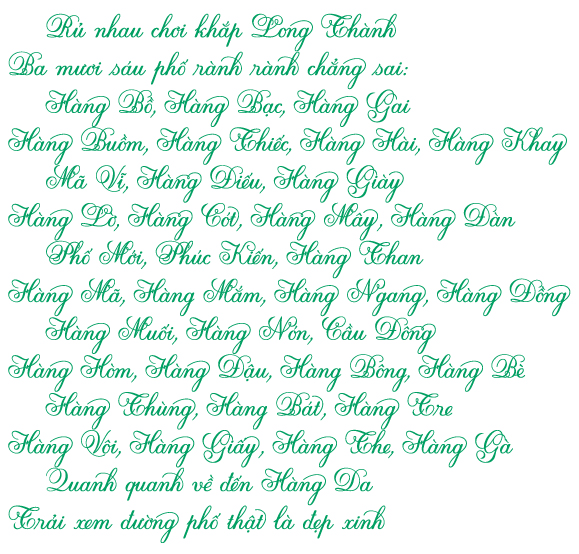
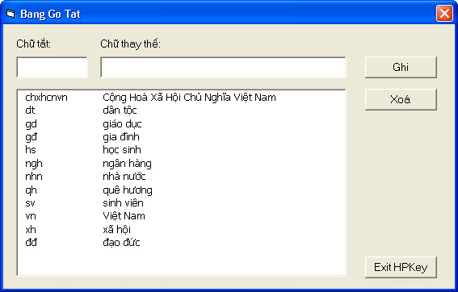
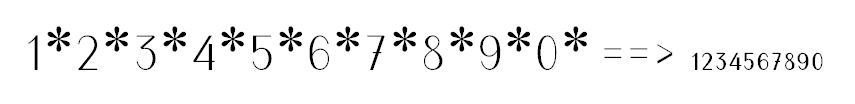
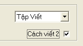
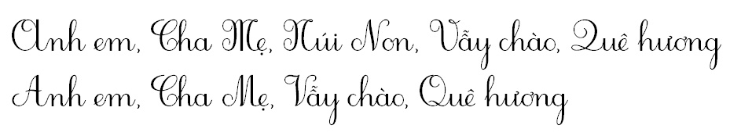
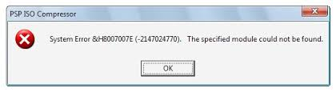

Hướng dẫn sử dụng HP Key 3.0

Tắt những bộ gõ khác, để tránh xung đột bộ nhớ
Phiên bản 2.4 có chức năng "Dùng clipboard" : Truyền dữ liệu bằng bộ nhớ.

Phiên bản 2.5 khi chọn bảng mã Tập viết các bạn có thể gõ ra một số chữ kiểu
như hình bằng cách gõ thêm * kế từ mình muốn và nhớ chọn phông kiểu 2. Và kiểu gõ VNQR bỏ * , chỉ còn + làm dấu ư ơ

Từ phiên bản 2.0 chương trình có thêm phần "Gõ tắt". Sau khi nhấn thanh SPACEBAR chữ tắt được thay thế.
Bạn có thể thiết lập bảng gõ tắt theo ý mình bằng chương trình đi kèm "Bảng Gõ Tắt".
Dữ liệu bảng gõ tắt được lưu giữ trong file GoTat.txt, để cùng thư mục với chương trình.
Ngoài ra bạn cũng có thể dùng chương trình WordPad của Window để soạn thảo và lưu lại dưới bảng mã Unicode,
và chữ tắt cách chữ thay thế là ký tự "|"

BẢNG GÕ NHANH:
Kết hợp nhấn nút Shift ta có chữ đầu Hoa: VD : Shift + cc = Ch
| aa = â | ee=ê | oo=ô | dd=đ | [=ư | ]=ơ | ww=ă |
| cc = ch | gg = gh | tt = th | kk = kh | nn = nh | qq = qu | pp = ph |
| ff = ngh | jj = gi | zz = ng | uu = ưu |
CÁC KIỂU GÕ TIẾNG VIỆT:
Đối với kiểu gõ VNQR khi bỏ dấu "hỏi" và "chấm" cuối từ thì cách ra 1 ký tự trắng.
Vì nếu không chương trình nhầm là sửa dấu cuối từ. Hoặc tắt chức năng bỏ dấu cuối từ.
| VNI | Telex | VNQR | |
| Dấu sắc: | 1 | s | ' |
| Dấu huyền | 2 | f | ` |
| Dấu hỏi | 3 | r | ? |
| Dấu ngã | 4 | x | ~ |
| Dấu nặng | 5 | j | . |
| Dấu mũ: â, ô | 6 | aa = â, ee = ê, oo = ô | ^ |
| Dấu móc: ư,ơ | 7 | uw = ư, ow = ơ | + |
| Dấu trăng: ă | 8 | aw = aw, uw = ư | ( |
| Chữ đ: | 9 | dd = đ | dd = đ |
Bỏ dấu 2 lần là xoá dấu
| Vni | Telex | VNQR |
| a1 = a | as = a | a' = a |
Bỏ dấu ngay sau ký tự hoặc cuối từ:
| Vni | Telex | VNQR |
| tro6ng1 = trống | troongs = trống | troong' = trống |
Sửa dấu: Bỏ dấu chồng lên
| Vni | Telex | VNQR |
| trống2 = trồng | trốngf = trồng | trống` = trồng | =
Phông HP-001: dùng cho dạy môn tập viết ở bật tiểu học hay để luyện chữ đẹp.
-Khi bạn chọn trên bảng mã là phông Tập viết thì sau khi nhập xong 1 từ, nhấn thanh spacebar chương trình sẽ chuyển từ đó sang bảng mã HP-001 (phải dùng phông HP001 mới thấy được)
- Đối với lớp 1, để có bộ số nhỏ kèm thêm ký tự "*" sau số .
VD: 1* ==> ra số 1nhỏ

-Nếu muốn viết Cách 2 bạn đánh vào hộp kiểm Cách viết 2:


------------------------------------------------------------------------------------------------------------------------
Nếu chạy chương trình bi lỗi sau đây (như hình)

các bạn chạy file "setuppad.exe" đi kèm với chương trình
file này tải tại:
http://download.microsoft.com/download/activexcontrolpad/Install/4.0.0.950/WIN98MeXP/EN-US/setuppad.exe
------------------------------------------------------------------------
download tại: nhainhp.com
------------------------------------------------------------------------
Chúng tôi rất mong ý kiến đóng góp của các bạn. Xin gởi về:
hpdesignvn@hotmail.com